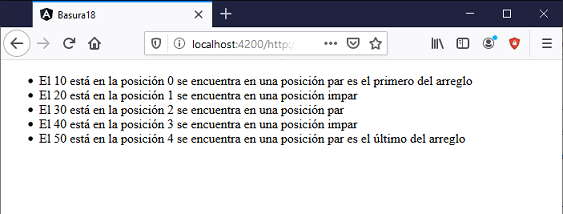

Angular tiene por defecto varias directivas estructurales: *ngFor, *ngIf y *ngSwitchCase, las hemos estado utilizando constantemente desde los primeros conceptos de este curso, ahora veremos en más profundidad la directiva estructural *ng-For y sus posibilidades.
Recordemos que las directivas estructurales se aplican a elementos HTML que permiten añadir, manipular o eliminar elementos del DOM (Document Object Model).
Las directivas estructurales llevan el prefijo *.
La directiva *ngFor permite añadir elementos HTML de acuerdo a la etiqueta HTML que se le aplica: <tr>, <li> etc.
Si tenemos definido el siguiente arreglo en el archivo *.ts:
arreglo1 = [10, 20, 30, 40, 50];
Luego podemos iterar sus elementos para mostrarlos en la vista:
<ul>
<li *ngFor="let elemento of arreglo1">
{{elemento}}
</li>
</ul>
En la primera iteración la variable 'elemento' almacena el valor 10, y mediante interpolación mostramos su valor dentro de la etiqueta 'li'.
Esta es la estructura mínima que podemos definir cuando utilizamos la directiva estructural *ngFor.
Si tenemos definido el siguiente arreglo y método en el archivo *.ts:
arreglo1 = [10, 20, 30, 40, 50];
rastrearPor(indice: number, elemento: number) {
console.log(indice, elemento);
}
Luego podemos iterar sus elementos para mostrarlos en la vista junto con otros elementos de información que podemos rescatar:
<ul>
<li *ngFor="let elemento of arreglo1; let indice=index; let impar=odd; trackBy: rastrearPor;let primero=first; let ultimo=last">
El {{elemento}} está en la posición {{indice}} se encuentra en una posición {{impar?'impar':'par'}}
{{primero?'es el primero del arreglo':''}} {{ultimo?'es el último del arreglo':''}}
</li>
</ul>
Separamos por punto y coma cada uno de los otros datos opcionales que nos suministra la directiva estructural *ngFor:
let indice=index : En la variable 'indice' se almacena el índice actual del elemento del arreglo1 que estamos procesando.
let impar=odd : En la variable 'impar' se almacena true si el elemento del arreglo1 se encuentra en una posición impar.
let primero=first : Almacena la variable 'primero' un valor true si estamos iterando el primer elemento del arreglo1.
let ultimo=last : Almacena la variable 'ultimo' un valor true si estamos iterando el último elemento del arreglo1.
trackBy: rastrearPor : Indicamos el nombre de una función que se ejecutará por cada iteración del arreglo1, pasando el índice y el elemento procesado.
Como resultado de ejecutar la aplicación tenemos como impresión:
La información extra que provee la directiva nos puede servir para tomar decisiones cuando tenemos que mostrar información, por ejemplo pintar de distinto color las filas pares e impares de una tabla, mostrar información extra para el primer elemento etc.
La microsintaxis de angular le permite configurar una directiva en una cadena compacta y amigable. El analizador de microsintaxis traduce esa cadena en atributos de una etiqueta <ng-template>.
Por ejemplo la sintaxis del problema anterior:
<ul>
<li *ngFor="let elemento of arreglo1; let indice=index; let impar=odd; trackBy: rastrearPor;let primero=first; let ultimo=last">
El {{elemento}} está en la posición {{indice}} se encuentra en una posición {{impar?'impar':'par'}}
{{primero?'es el primero del arreglo':''}} {{ultimo?'es el último del arreglo':''}}
</li>
</ul>
El transpilador de Angular procede a modificar la directiva estructural *ngFor por un elemento <ng-template> que envuelve a la etiqueta que le hemos definido la directiva estructural:
<ul>
<ng-template ngFor let-elemento [ngForOf]="arreglo1" let-indice="index" let-impar="odd" let-primero="fist" let-ultimo="last" [ngForTrackBy]="rastrearPor">
<li>
El {{elemento}} está en la posición {{indice}} se encuentra en una posición {{impar?'impar':'par'}}
{{primero?'es el primero del arreglo':''}} {{ultimo?'es el último del arreglo':''}}
</li>
</ng-template>
</ul>
Si modificamos manualmente con el código anterior, el resultado es exactamente el mismo:
Si bien el resultado es el mismo, podemos comprobar que es mucho más legible utilizar la sintaxis de la directiva *ngFor:
<li *ngFor="let elemento of arreglo1; let indice=index; let impar=odd; trackBy: rastrearPor;let primero=first; let ultimo=last">
En lugar de definir la etiqueta ng-template con sus propiedades:
<ng-template ngFor let-elemento [ngForOf]="arreglo1" let-indice="index" let-impar="odd" let-primero="fist" let-ultimo="last" [ngForTrackBy]="rastrearPor">
Traemos el concepto de microsintaxis para entender porque las directivas estructurales requieren obligatoriamente el caracter '*' previo a su nombre. Angular sabe que las directivas estructurales deben ser transformadas previamente y expandidas en una etiqueta ng-template.
Siempre es más conveniente utilizar la sintaxis *ngFor, pero es importante entender como Angular transforma este tipo de directivas para los casos que tengamos que codificar nuestras propieas directivas estructurales.